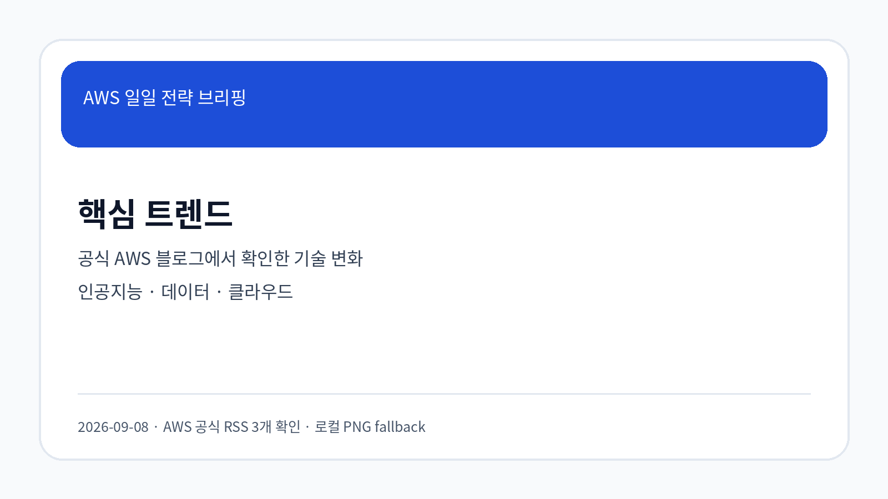
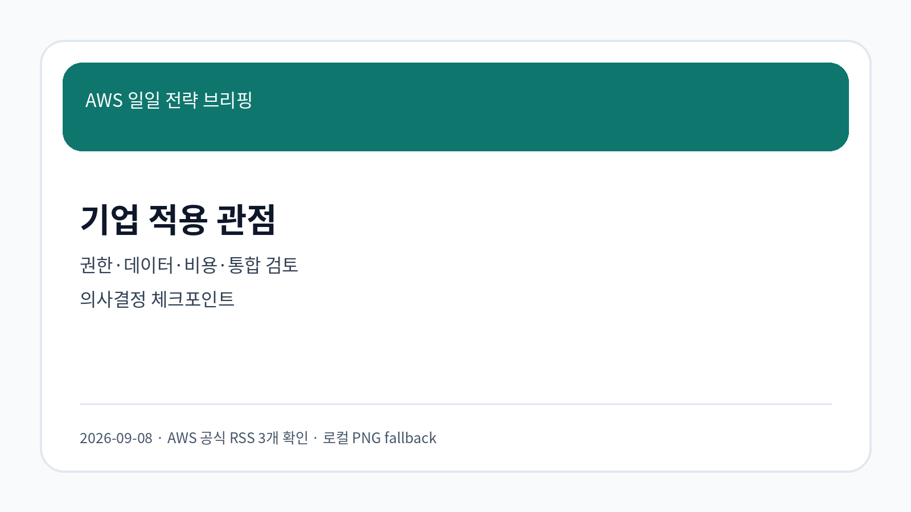
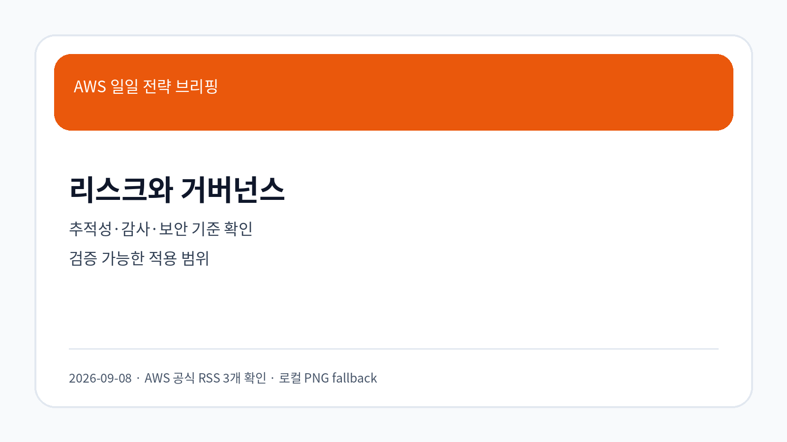

Amazon Bedrock 업데이트와 기업 적용 검토 포인트
출처: AWS News Blog · 게시: 2026-09-07 · 분류: Cloud
AWS 공식 블로그가 Amazon Bedrock, Amazon EC2, AWS Lambda 관련 변화와 적용 사례를 다뤘습니다. 원문 기준으로 기능 범위, 통합 조건, 보안·비용 영향을 함께 검토해야 합니다.
원문 열기공식 RSS 기반 한국어 브리핑
이번 실행에서 새로 저장하고 LLM Wiki 처리한 항목을 근거로 작성했습니다.

오늘 확인한 공식 RSS는 3개이며, 본문은 확인 가능한 원문 URL과 저장된 Markdown만 근거로 작성했습니다.
수집 항목은 AWS 서비스의 기능 확장뿐 아니라 데이터 접근, 권한, 통합, 비용 검토를 함께 요구합니다.
도입 판단은 기능 유무보다 원문이 전제한 운영 조건과 조직 내부 통제 기준의 적합성을 기준으로 해야 합니다.
보안·감사·개인정보 기준이 강한 환경에서는 사용 기록, 권한 경계, 외부 시스템 연계 범위를 먼저 확인해야 합니다.

출처: AWS News Blog · 게시: 2026-09-07 · 분류: Cloud
AWS 공식 블로그가 Amazon Bedrock, Amazon EC2, AWS Lambda 관련 변화와 적용 사례를 다뤘습니다. 원문 기준으로 기능 범위, 통합 조건, 보안·비용 영향을 함께 검토해야 합니다.
원문 열기출처: AWS Korea Tech Blog · 게시: 2026-09-07 · 분류: Korea Tech
AWS 공식 블로그가 Amazon Bedrock AgentCore, Amazon Bedrock, Amazon S3 관련 변화와 적용 사례를 다뤘습니다. 원문 기준으로 기능 범위, 통합 조건, 보안·비용 영향을 함께 검토해야 합니다.
원문 열기출처: AWS Korea Tech Blog · 게시: 2026-09-07 · 분류: Korea Tech
AWS 공식 블로그가 Amazon Bedrock, Amazon S3, Amazon DynamoDB 관련 변화와 적용 사례를 다뤘습니다. 원문 기준으로 기능 범위, 통합 조건, 보안·비용 영향을 함께 검토해야 합니다.
원문 열기출처: AWS Korea Tech Blog · 게시: 2026-09-07 · 분류: Korea Tech
AWS 공식 블로그가 Amazon Bedrock, AWS Lambda, OpenSearch 관련 변화와 적용 사례를 다뤘습니다. 원문 기준으로 기능 범위, 통합 조건, 보안·비용 영향을 함께 검토해야 합니다.
원문 열기출처: AWS Korea Tech Blog · 게시: 2026-09-07 · 분류: Korea Tech
AWS 공식 블로그가 Amazon S3, Amazon DynamoDB 관련 변화와 적용 사례를 다뤘습니다. 원문 기준으로 기능 범위, 통합 조건, 보안·비용 영향을 함께 검토해야 합니다.
원문 열기출처: AWS Korea Tech Blog · 게시: 2026-09-07 · 분류: Korea Tech
AWS 공식 블로그가 Amazon Bedrock AgentCore, Amazon Bedrock, Amazon S3 관련 변화와 적용 사례를 다뤘습니다. 원문 기준으로 기능 범위, 통합 조건, 보안·비용 영향을 함께 검토해야 합니다.
원문 열기출처: AWS Korea Tech Blog · 게시: 2026-09-03 · 분류: Korea Tech
AWS 공식 블로그가 Amazon EKS, Amazon EC2 관련 변화와 적용 사례를 다뤘습니다. 원문 기준으로 기능 범위, 통합 조건, 보안·비용 영향을 함께 검토해야 합니다.
원문 열기출처: AWS News Blog · 게시: 2026-08-18 · 분류: Cloud
AWS 공식 블로그가 Amazon Bedrock, Amazon Q, Amazon SageMaker 관련 변화와 적용 사례를 다뤘습니다. 원문 기준으로 기능 범위, 통합 조건, 보안·비용 영향을 함께 검토해야 합니다.
원문 열기| 기사 | 게시 | 카테고리 |
|---|---|---|
| Amazon Bedrock 업데이트와 기업 적용 검토 포인트 | 2026-09-07 | Cloud |
| GS리테일의 전사 AI Gateway 구축 사례 – 2부: 실사용을 견디는 운영과 거버넌스 | 2026-09-07 | Korea Tech |
| GS리테일의 전사 AI Gateway 구축 사례 – 1부: 인증·라우팅·계정 자동화 설계 | 2026-09-07 | Korea Tech |
| AI Agent를 위한 OpenSearch 검색 품질 개선하기 (Part 2) | 2026-09-07 | Korea Tech |
| 채널코퍼레이션의 Amazon DynamoDB와 함께한 아키텍처 현대화 여정 – 3부 | 2026-09-07 | Korea Tech |
| 가격 예측부터 입찰 전략까지, LG에너지솔루션의 Amazon Bedrock AgentCore 기반 ERCOT 분석 에이전트 구축기 | 2026-09-07 | Korea Tech |
| Amazon EC2 Nitro V6의 Connection Tracking 유휴 타임아웃 변경 대응하기 | 2026-09-03 | Korea Tech |
| Amazon Bedrock 업데이트와 기업 적용 검토 포인트 | 2026-08-18 | Cloud |

| 관찰된 사실 | 근거 출처 URL | 기업 의사결정 시사점/리스크/기회 |
|---|---|---|
| Amazon Bedrock 업데이트와 기업 적용 검토 포인트 | 원문 링크 | 관찰된 사실은 Amazon Bedrock 관련 기술 선택지가 넓어지고 있음을 보여줍니다. 기업 의사결정자는 내부 권한 체계, 데이터 분류, 감사 기록, 기존 시스템 연계를 확인한 뒤 적용 범위를 정해야 합니다. |
| GS리테일의 전사 AI Gateway 구축 사례 – 2부: 실사용을 견디는 운영과 거버넌스 | 원문 링크 | 관찰된 사실은 Amazon Bedrock AgentCore 관련 기술 선택지가 넓어지고 있음을 보여줍니다. 기업 의사결정자는 내부 권한 체계, 데이터 분류, 감사 기록, 기존 시스템 연계를 확인한 뒤 적용 범위를 정해야 합니다. |
| GS리테일의 전사 AI Gateway 구축 사례 – 1부: 인증·라우팅·계정 자동화 설계 | 원문 링크 | 관찰된 사실은 Amazon Bedrock 관련 기술 선택지가 넓어지고 있음을 보여줍니다. 기업 의사결정자는 내부 권한 체계, 데이터 분류, 감사 기록, 기존 시스템 연계를 확인한 뒤 적용 범위를 정해야 합니다. |
| AI Agent를 위한 OpenSearch 검색 품질 개선하기 (Part 2) | 원문 링크 | 관찰된 사실은 Amazon Bedrock 관련 기술 선택지가 넓어지고 있음을 보여줍니다. 기업 의사결정자는 내부 권한 체계, 데이터 분류, 감사 기록, 기존 시스템 연계를 확인한 뒤 적용 범위를 정해야 합니다. |
| 채널코퍼레이션의 Amazon DynamoDB와 함께한 아키텍처 현대화 여정 – 3부 | 원문 링크 | 관찰된 사실은 Amazon S3 관련 기술 선택지가 넓어지고 있음을 보여줍니다. 기업 의사결정자는 내부 권한 체계, 데이터 분류, 감사 기록, 기존 시스템 연계를 확인한 뒤 적용 범위를 정해야 합니다. |
| 가격 예측부터 입찰 전략까지, LG에너지솔루션의 Amazon Bedrock AgentCore 기반 ERCOT 분석 에이전트 구축기 | 원문 링크 | 관찰된 사실은 Amazon Bedrock AgentCore 관련 기술 선택지가 넓어지고 있음을 보여줍니다. 기업 의사결정자는 내부 권한 체계, 데이터 분류, 감사 기록, 기존 시스템 연계를 확인한 뒤 적용 범위를 정해야 합니다. |
| Amazon EC2 Nitro V6의 Connection Tracking 유휴 타임아웃 변경 대응하기 | 원문 링크 | 관찰된 사실은 Amazon EKS 관련 기술 선택지가 넓어지고 있음을 보여줍니다. 기업 의사결정자는 내부 권한 체계, 데이터 분류, 감사 기록, 기존 시스템 연계를 확인한 뒤 적용 범위를 정해야 합니다. |
| Amazon Bedrock 업데이트와 기업 적용 검토 포인트 | 원문 링크 | 관찰된 사실은 Amazon Bedrock 관련 기술 선택지가 넓어지고 있음을 보여줍니다. 기업 의사결정자는 내부 권한 체계, 데이터 분류, 감사 기록, 기존 시스템 연계를 확인한 뒤 적용 범위를 정해야 합니다. |
수집 데이터만으로 특정 내부 적용 범위를 단정하지 않습니다. 적용 전 데이터 분류, IAM 권한, 감사 로그, 비용 예측, 기존 시스템 연계 영향은 별도 검증이 필요합니다.
이번 실행은 한국어 레이블 가독성과 재현성을 위해 로컬 PNG fallback 이미지를 사용했습니다. GPT Image 2 호출은 인증·시간 제약을 고려해 생략했습니다.